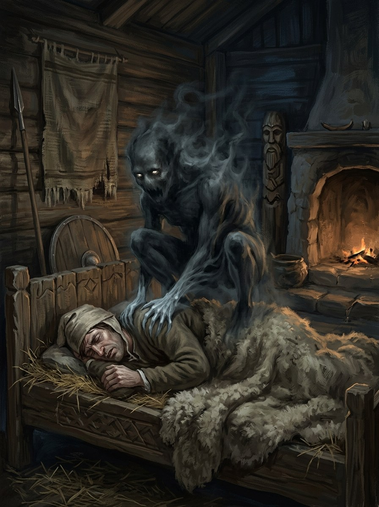

Slogutis (the presser)¶
Folk source [Historical record]¶
The nightmare spirit (from slėgti, „to press“) that sits on sleepers‘ chests so they cannot breathe or move, and rides horses at night, leaving manes tangled into braids. In some regions it is the wandering soul of a living person, often a witch. Defences across the region: stop keyholes, keep a blade by the bed, or invite the presser to come for something in the morning, so that whoever arrives to borrow it is unmasked.
Slogutis (the presser)

Slogutis (the presser) · creature¶
Tipas |
būtybė |
Status |
Sagos išmonė |
Pastaba |
Bestiary §5. Danger II → IV. |
In the saga (where the folk are half-wrong)¶
A shard of a living person’s grudge. Anyone who falls asleep in envy or hatred may send one without knowing. The folk are right that it is a living soul and wrong that only witches send it: the jealous sister-in-law, the cheated neighbour and the bitter old soldier all do, and wake tired. In a court full of resentment (Jogaila’s Vilnius, 1382) the sloguciai are thick as moths.
Signs & habitat¶
A heavy weight on the chest at the edge of sleep; braided horse-manes; a neighbour who looks bruised and exhausted next day.
Before / after the Unbinding¶
Before: frightening but rarely fatal. After: sloguciai kill, pressing infants and the old to death, and hatred concentrated in towns and camps produces ones that can be seen.
Banes, wards, bargains, and their cost¶
A knife or sickle at the bedside, blade up (children roll onto it). Stop every hole (in winter a sealed smoky hut is its own danger). Say in the dark „Ateik rytoj druskos“, „Come tomorrow for salt“: whoever comes to borrow salt is the sender, and now you have a feud and must give the salt.
Danger level¶
II hazard → IV deadly.
Story hooks¶
Book I: Jogaila pressed nightly after ch. 7, his own guilt or Ona’s grief sending it. Book IV: Vytautas, old and full of grudges, realises he has been the sender in his own court.
Ryšiai
Servant of: Velnias — Tentative link: hatred sent in sleep; the bestiary names no patron.
Origin [Historical record] nightmare spirit that sits on sleepers' chests and rides horses by night · [The saga's invention] a shard of a living person's grudge
Tier Dvasia · born of a living mind, no patron named
Danger II hazard → IV deadly
Habitat Sleepers' chests; stables; crowded courts and camps full of resentment
Wants To press: breath and rest from the one the sender hates
Takes Sleep and breath. After 1387 it kills infants and the old
Signs A heavy weight on the chest at the edge of sleep; braided horse-manes; a neighbour who looks bruised and exhausted next day
Banes A blade at the bedside; every hole stopped; the salt trick
Half-wrong truth. The folk are right that it is a living soul. They are wrong that only witches send it: the jealous sister-in-law, the cheated neighbour and the bitter old soldier all do, and wake tired without knowing why.
Where it thrives. In a court full of resentment (Jogaila's Vilnius, 1382) the sloguciai are thick as moths.
Pressing. Sits on the sleeper's chest so he cannot breathe or move.
Riding. Rides horses at night and leaves them sweating, manes braided into knots.
Blade at the bedside. Blade up. Children roll onto it.
Stopping every hole. In winter a sealed, smoky hut is its own danger.
The salt trick. Say aloud Ateik rytoj druskos. Whoever comes to borrow salt is the sender. Now you have a feud, and you must give the salt.
Sąsajos¶
graph LR
slogutis["Slogutis (the presser)"]
velnias["Velnias"]
slogutis -->|Servant of| velnias
style slogutis stroke-width:3px